末世街区
AIGC · 游戏影像
作品简介
白发角色进入废城街口，零散的游荡尸逐渐围拢。镜头通过俯视走位、升级拾取和青蓝光效交代玩法，随后引入体型更大的尸王，把画面推到挑战结果。街道中线串起走位和关卡变化。
制作资产
点击图片放大查看
人物与角色

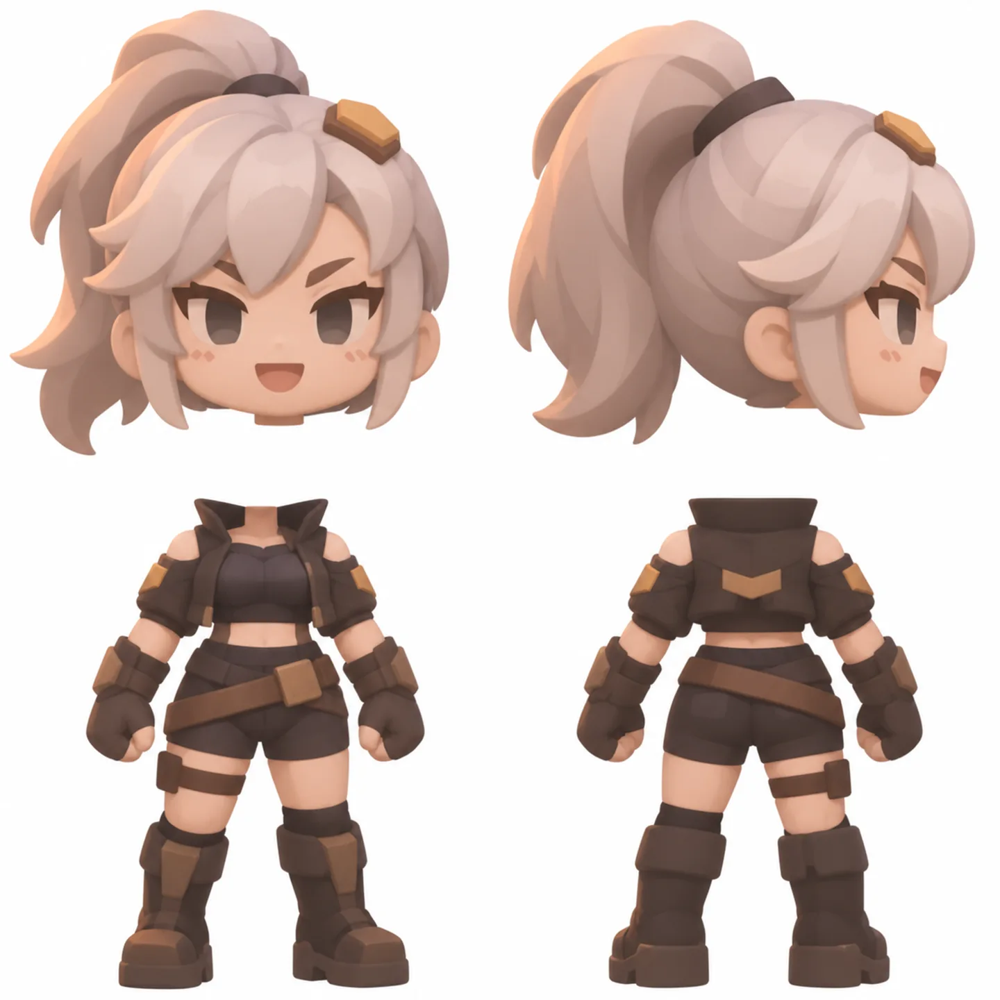
白色高马尾、深色护具和黑靴使俯视画面可读。角色以泛用末日护具做原创重制，头像与背面保持配色。

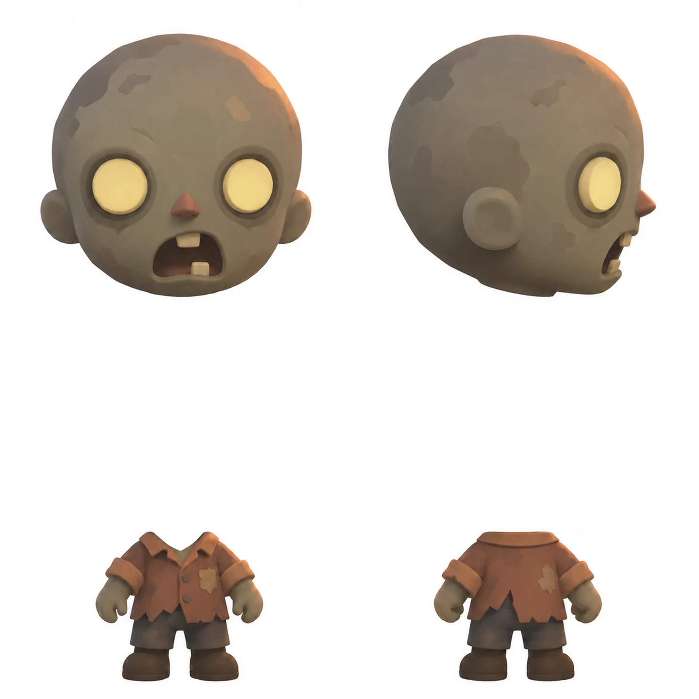
普通僵尸按同一套衣着和灰绿色调做群体复用，眼睛淡黄，衣服磨损且不画伤口，镜头远处靠亮眼位置辨认。

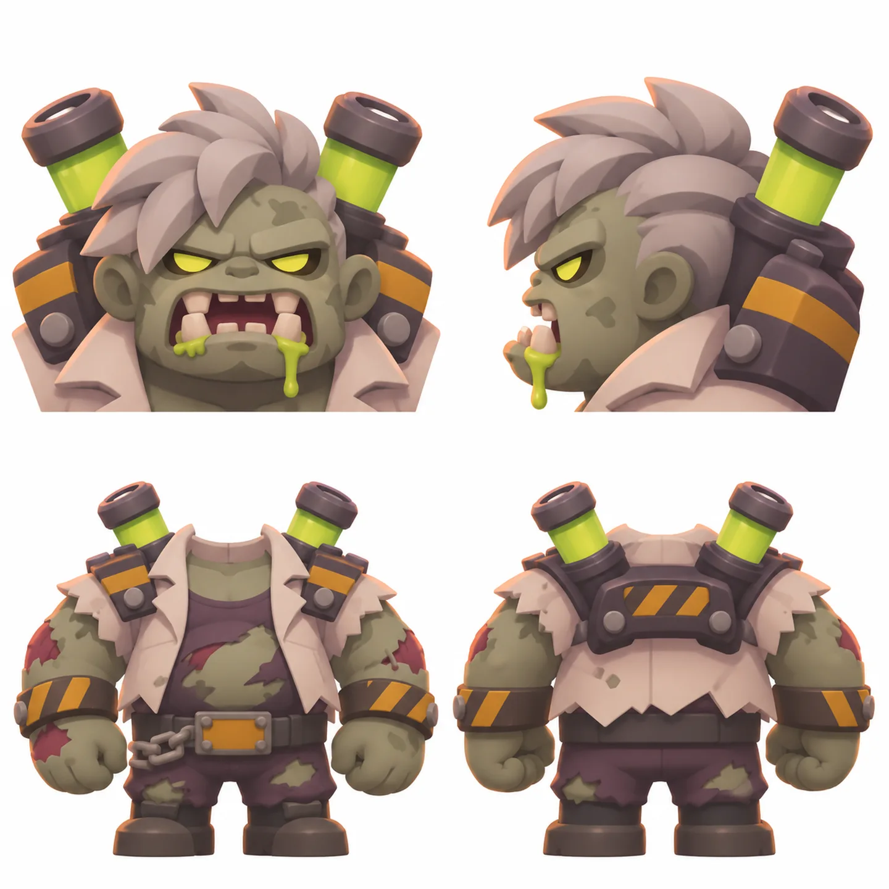
大型敌方用岩灰绿肤、破白外套、荧绿背罐和两边厚护臂区分普通僵尸。保留色彩意思，改用无标细节。
场景与布景

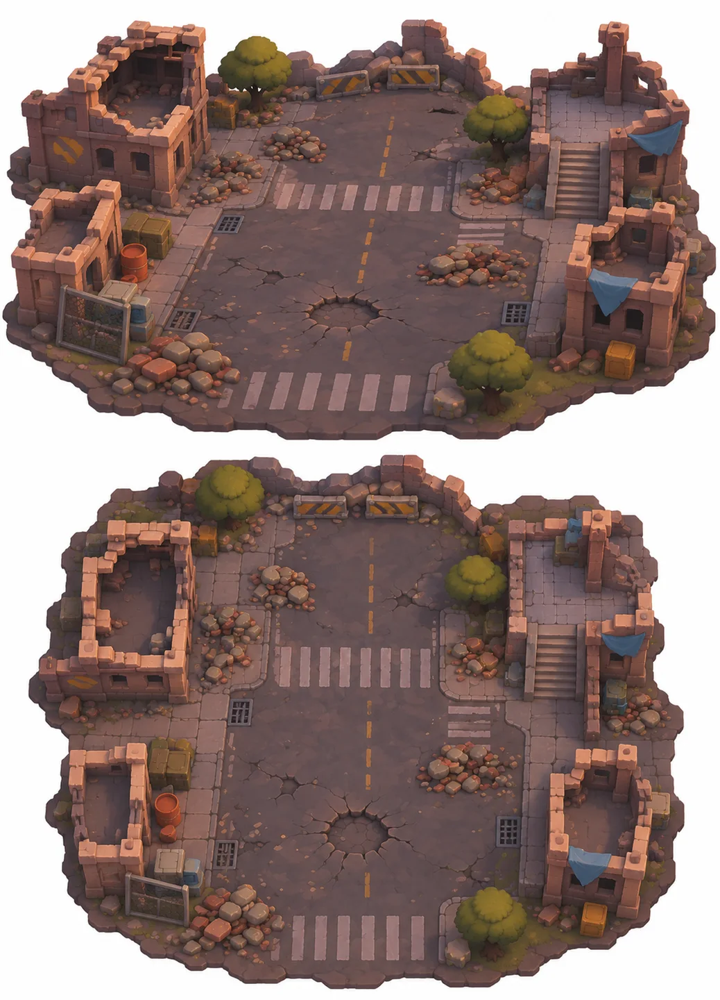
场景设定用于「尸王压到路口」段落。巨型轮廓越过中轴，画面边缘亮起警示。

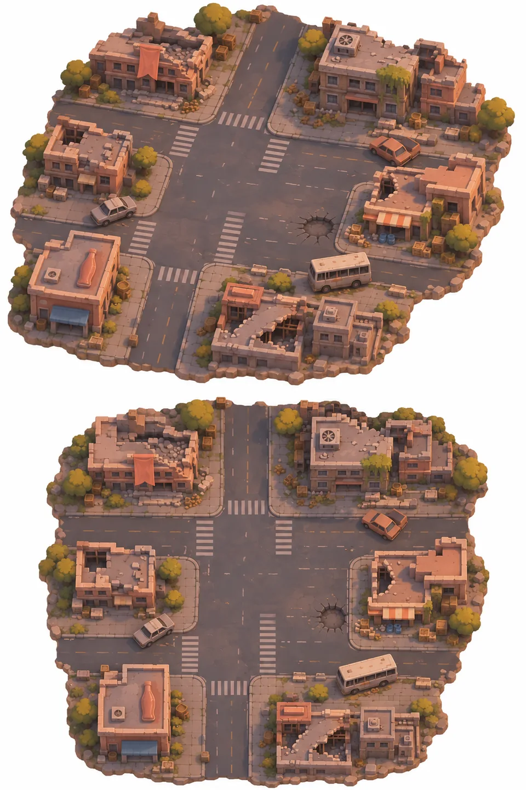
场景设定用于「初始进入废城」段落。队员沿中轴走入，方向盘和道具格随之出现。
道具与产品

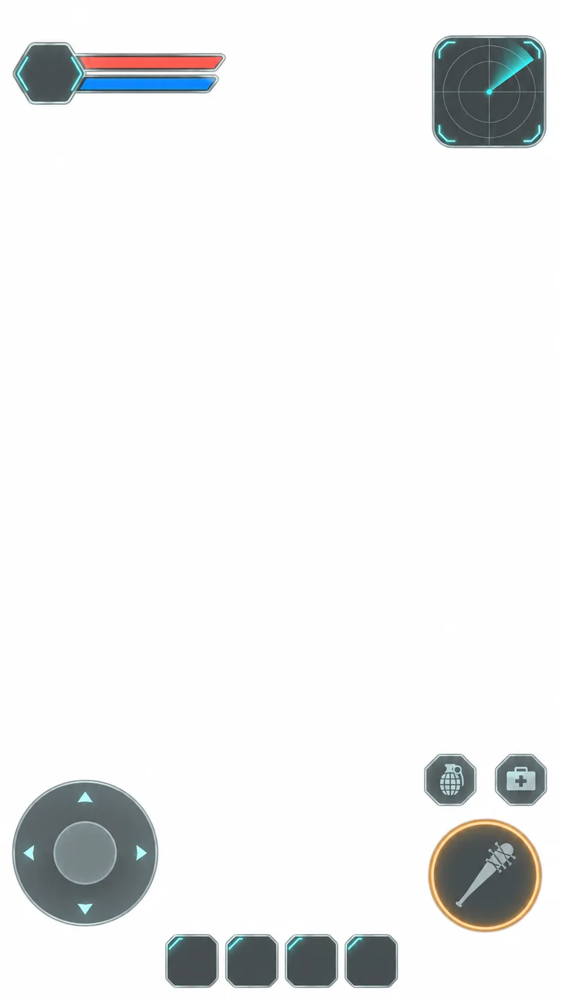
以原创排列示意方向垫、状态条、定位图、快捷格和操作键，白底独立归档。画面文字由后期自行叠加。

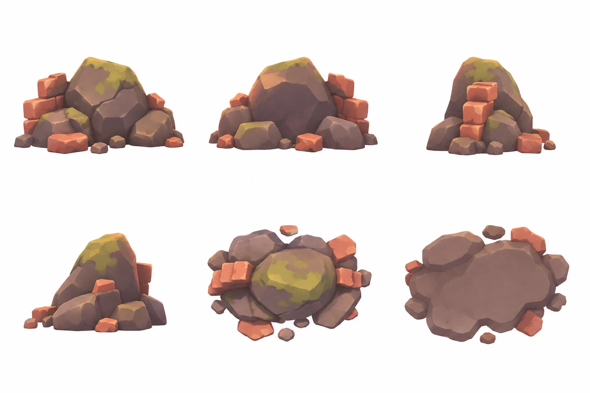
路口和尸王长街的破路石堆，离道路会车线半步，颜色延续建筑。

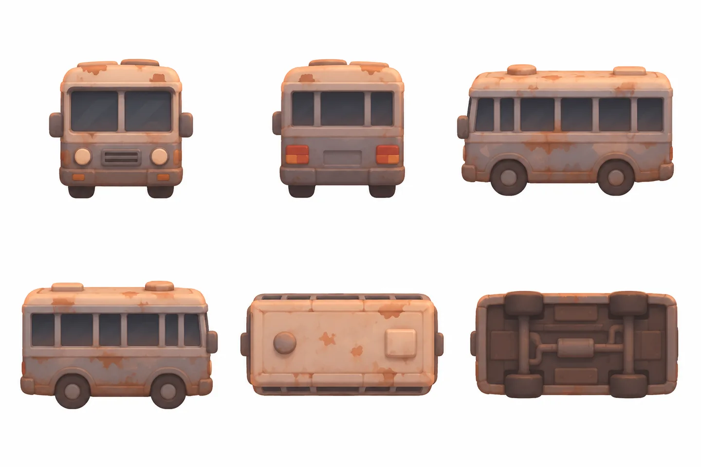
停在路沿的浅色退役小巴，窗带与锈线在各面连续，编号车牌清空。

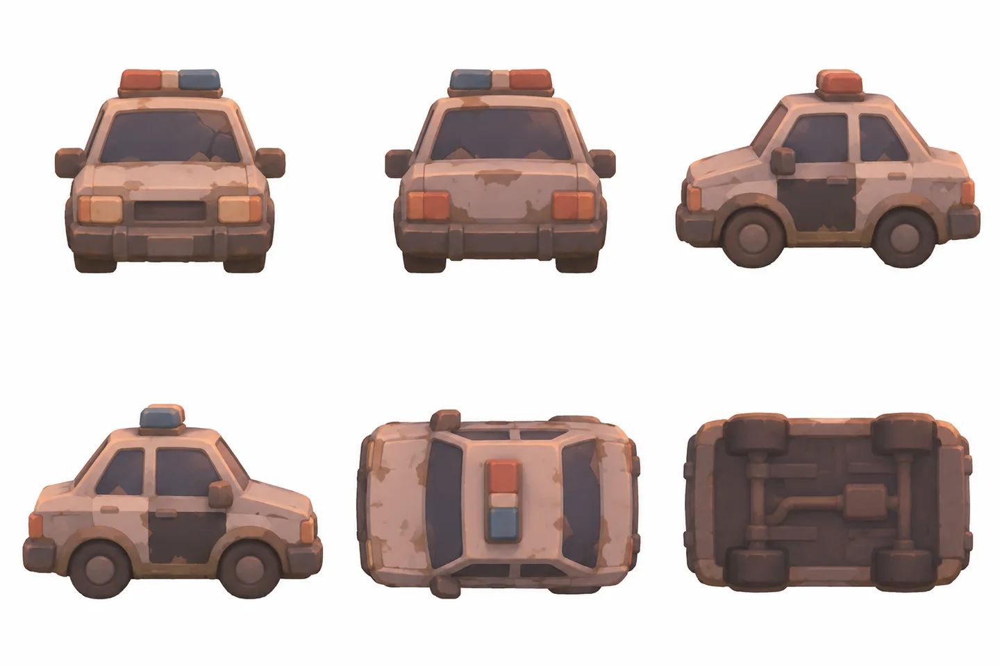
路口左缘灰车，车顶方灯仅作体块。所有车身文字和徽章省去。

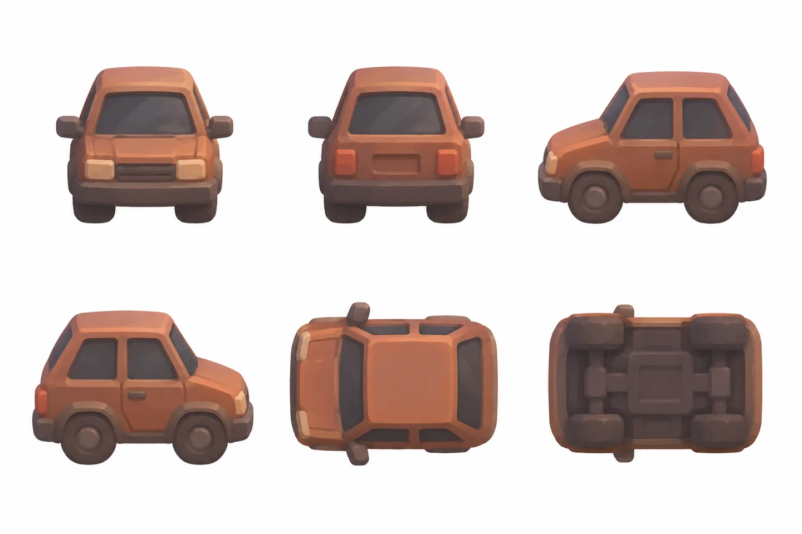
堵在侧路的棕橙色轿车。偏暖车漆与冷灰路面搭对比。

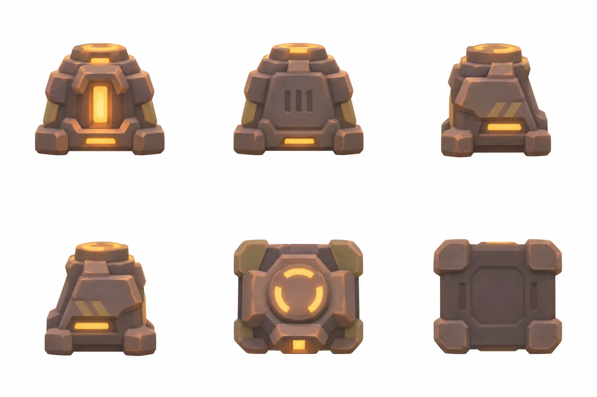
第一处光柱中的虚构琥珀能量升级道具。与青光版区分大小、颜色和外缘。

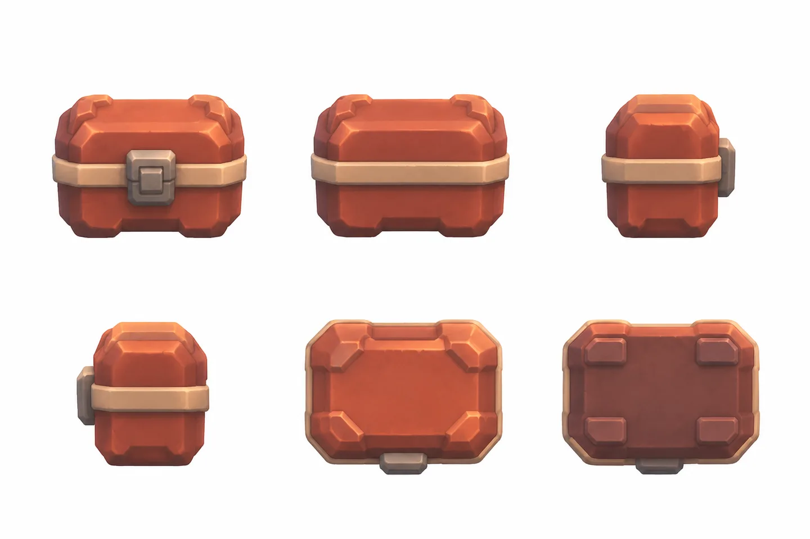
快捷物品格中的红急救包采用无标壳体，方便作为独立道具重新制图。

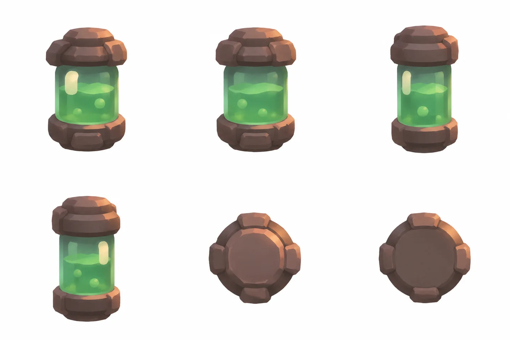
物品栏小型绿色恢复道具，外形为密封胶囊，留空字样。

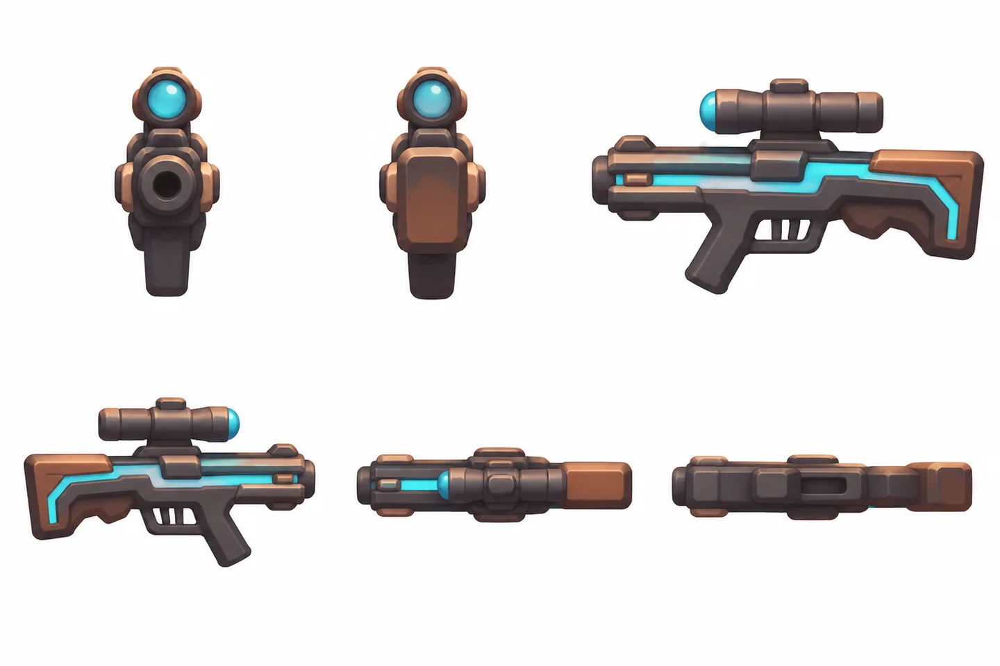
第二次升级的虚构青光能量发射器。深铜与青蓝导光体辨识。图仅供造型与特效位置参考。